Chapter 16 Color in R
Xiaoyu Su
library(ggplot2)
library(ggplot2movies)
library(tidyverse)
library(RColorBrewer)
library(viridis)
library(ggplot2)
library(colorspace)
library(reshape2)
library(dichromat)
library(vcd)16.1 Overview
This section covers the syntax of using colors in R (which reviews some of the materials in class) as well as the related packages and tools that I found interesting.
Color deployments might not always add analytic sense to the graph, but maybe a pleasant color representation brings comfort and so we have more patience towards it and stair a it longer. It’s always better to look at a graph nicely colored.
16.2 Discrete Colors
16.2.1 Basics
For discrete colors, we can select the exact colors we want using several different representations: common names, color Hex code, or rgb code. The following code shows this. Notice that the Hex code is case insensitive. For rgb, if you don’t specify maxColorValue=255, the default value range is [0,1]. So in this case we need to divide every value by 255.
barplot(rep(1, 5), axes = FALSE, space = 0.1, border = 'white',
col = c('pink',
'#BF87B3',
'#8255a1',
rgb(72/255, 32/255, 143/255),
rgb(31, 0, 127, maxColorValue=255)))R differentiates between color and fill. Basically, you color the dots and lines but you fill in an area. In ggplot2, the syntax are usually scale_color_something and scale_fill_something respectively. Let’s take a look at the grey scale for an illustration.
# color
ggplot(iris, aes(x=Petal.Width, y=Petal.Length)) +
geom_point(aes(color=Species), size=3) +
scale_color_grey(start = 0.6, end = 0.1) +
theme_bw()
# fill
ggplot(iris, aes(x=Species, y=Petal.Width)) +
geom_boxplot(aes(fill=Species)) +
scale_fill_grey(start = 0.8, end = 0.4) +
theme_bw()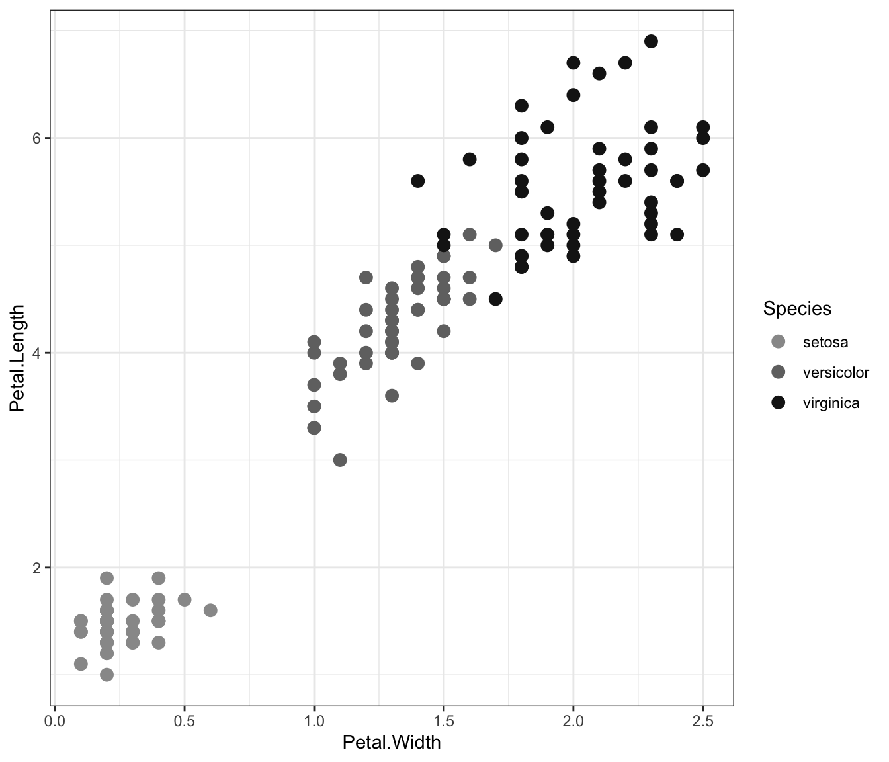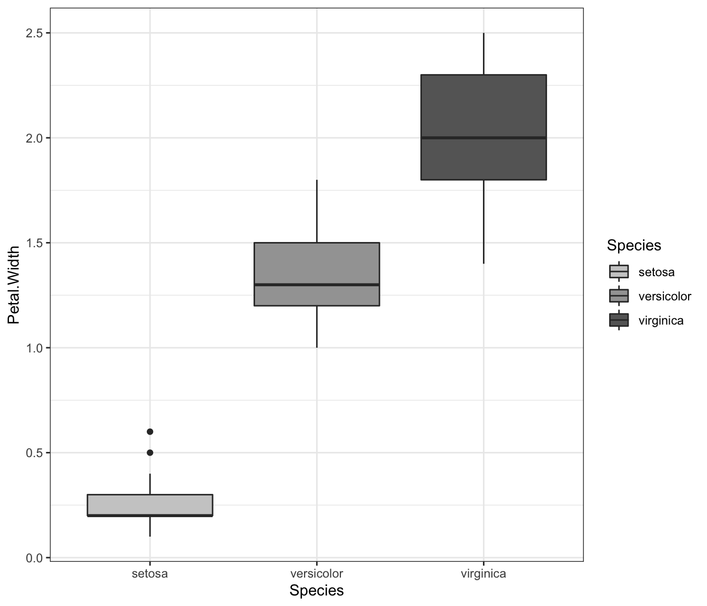
16.2.2 RColorBrewer
The RColorBrewer package presents some nice color palettes for discrete color uses. First we can display all the palettes using this:
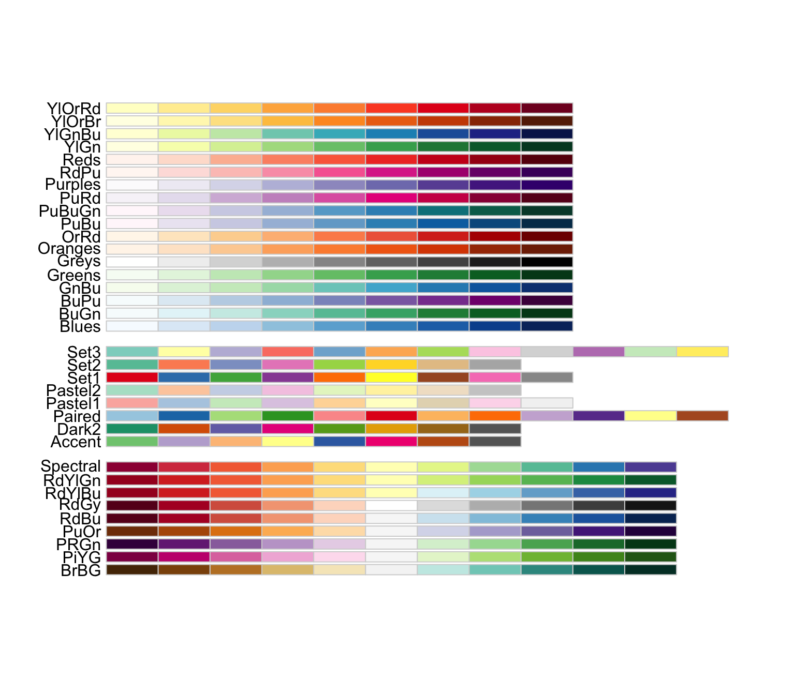
Here is how we can use brewer’s palettes in ggplot2:
# color
ggplot(iris, aes(x=Sepal.Width, y=Sepal.Length)) +
geom_point(aes(color=Species), size=3) +
scale_color_brewer(palette = "Set2")
# fill
ggplot(iris,aes(x=reorder(Species, Sepal.Length, median),y=Sepal.Length)) +
geom_boxplot(aes(fill=Species), color='#80593D',varwidth=TRUE) +
scale_fill_brewer(palette = "Set3") +
labs(x='Sepal.Length')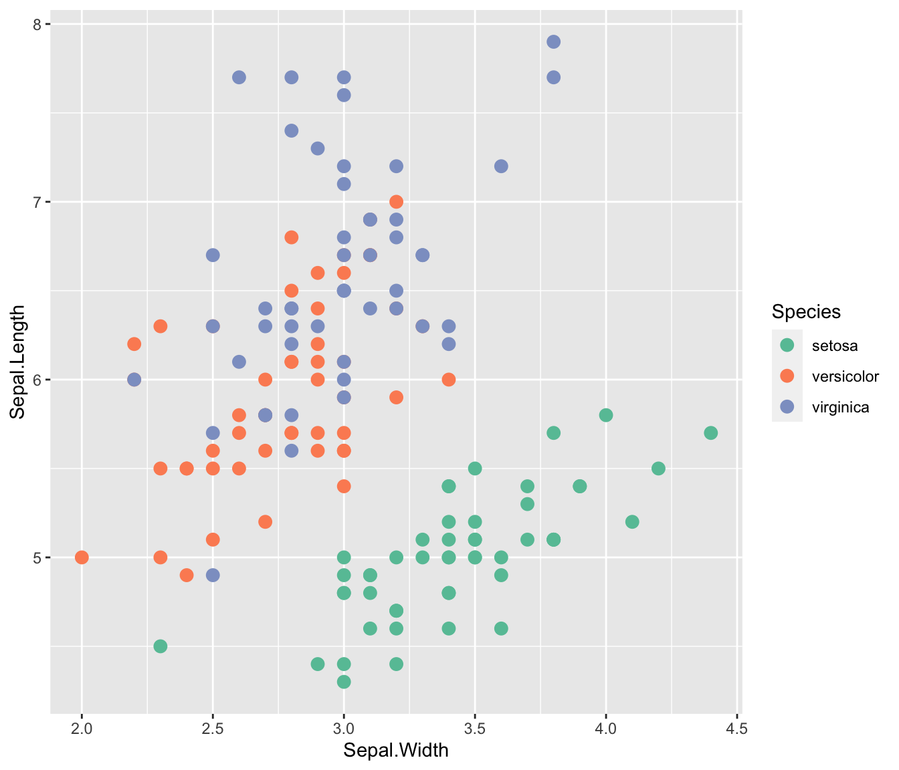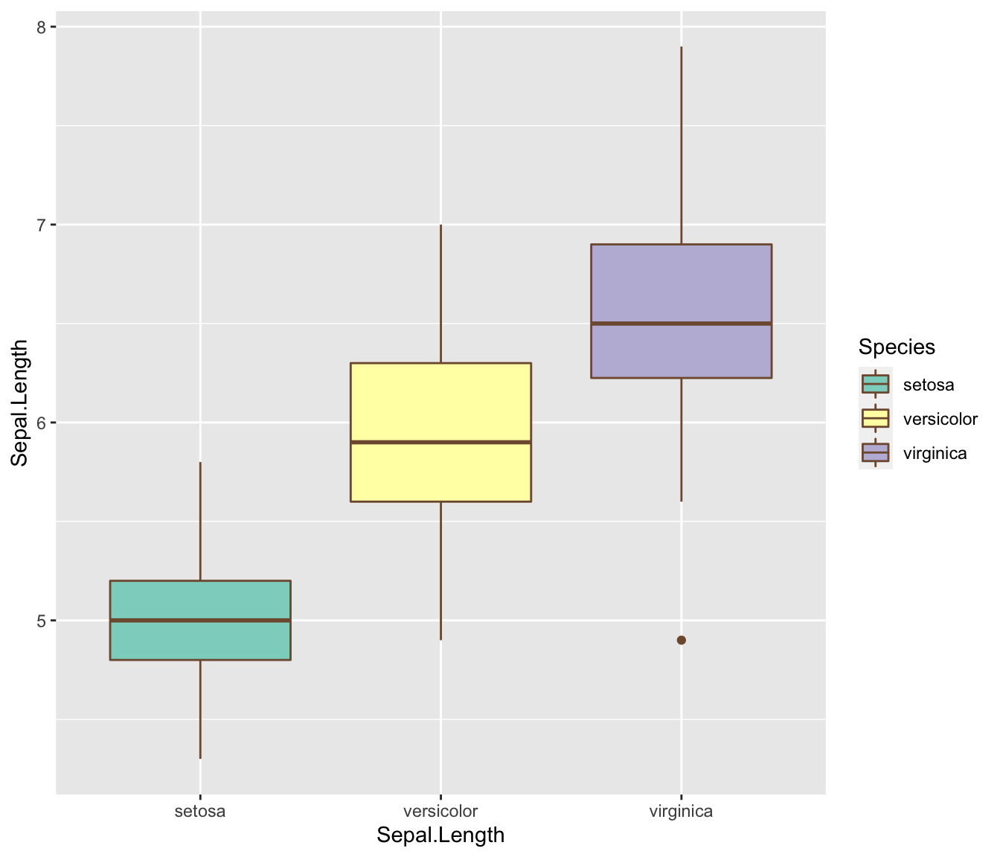
It is worthing noting that we can also extract the Hex code directly from RColorBrewer like this:
## [1] "#FEEDDE" "#FDBE85" "#FD8D3C" "#E6550D" "#A63603"This adds flexibility to our use of the package. So for instance, we can pass the statements like above into the color arguments in vcd mosaic plots (highlighting_fill for mosaic and gp for doubledecker). Below shows a concrete example.
(Note: n must at least be 3)
doubledecker(Improved ~ Treatment + Sex,
data=Arthritis,
gp = gpar(fill = brewer.pal(n=3, 'Blues') ))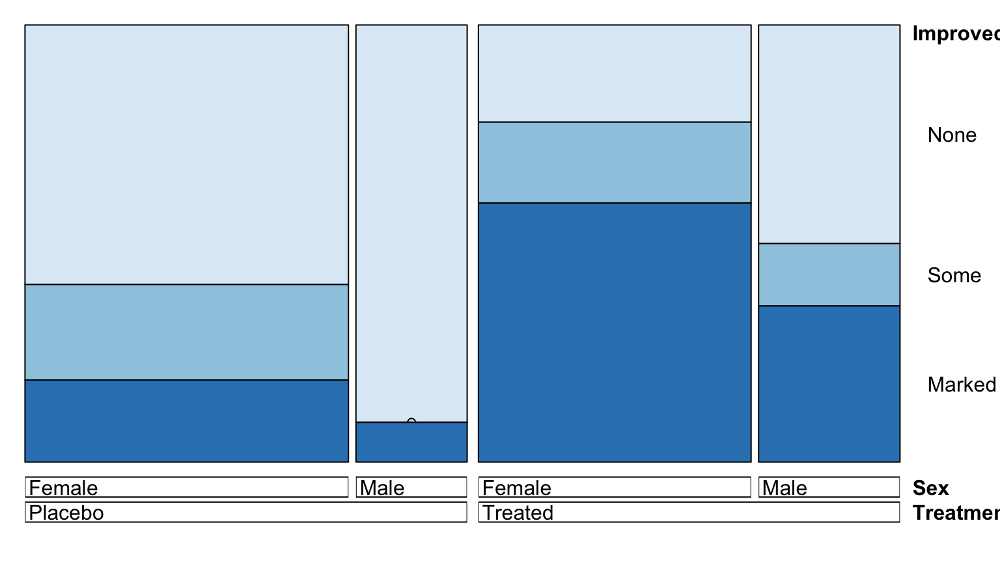
16.2.3 Viridis
The viridis package has continuous scales, but we can use it discretely as well.
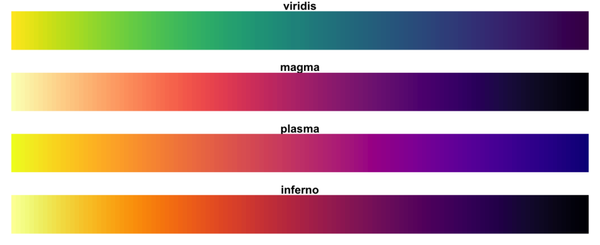
We can pass in the discrete=TRUE argument to make it work. In addition, we can choose the palette by adding options=palette_name.
ggplot(iris, aes(x=Petal.Length, y=Petal.Width)) +
geom_point(aes(color=Species), size=3) +
scale_color_viridis(discrete = TRUE, option='plasma') +
theme_bw()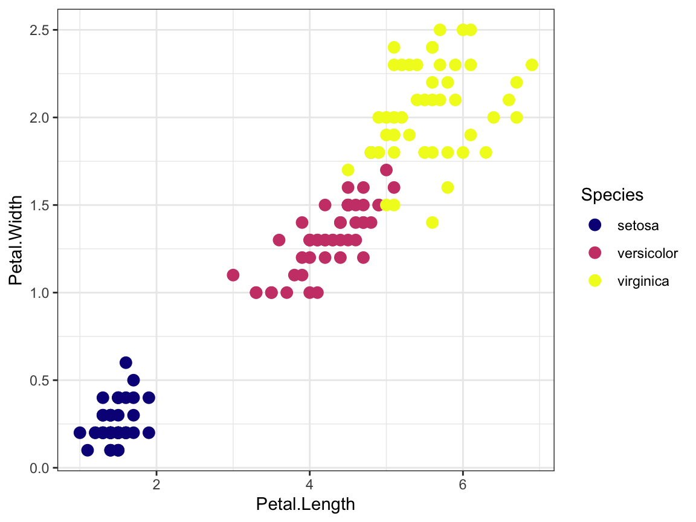
16.2.4 Color Picker
But what if we see a color combination we would like to use without knowing its code or name? Here is a way to meet our demands. Simply take a screenshot and upload the image to this website https://imagecolorpicker.com/, and we can retrieve the color Hex code and rgb code easily by just scrolling over the desired pixel.
image Soruce: https://imagecolorpicker.com/
Thus it is easy to extract the colors we want. I picked two kinds of red from the picture above, #f1beb6 and #e48173, and colored a histogram with them.
movies <- filter(movies, length < 250)
ggplot(data=movies, aes(length)) +
geom_histogram(aes(y=..density..), fill="#f1beb6", col='#e48173', binwidth = 2)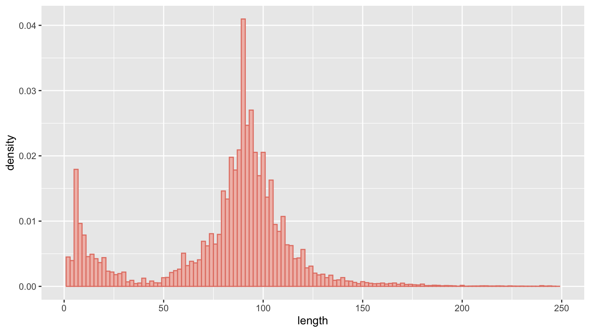
16.3 Continuous Colors
For continuous scale, we cannot use the RColorBrewer package directly since it only has discrete palettes. But in general, continuous scales has these low and high arguments where you can pass in discrete colors and generate a continuous scale between them. For the syntax, typically, we can use something like scale_fill_gradient.
16.3.1 Barplot
We might want to color a bar chart depending on the frequency or count. Beware the way we choose the colors so that the chart doesn’t look perceptually non-uniform (or simply too ugly). To create a perceptually uniformed barplot, we can do the following:
# create a artifical dataframe
df <- data.frame(x=c('A','B','C','D','E','F','G'), count=c(2,10,14,16,20,15,8))
ggplot(df, aes(x=x, y=count)) + geom_col(aes(fill=count)) + scale_fill_gradient(low='#141f33',high='#5f99f3')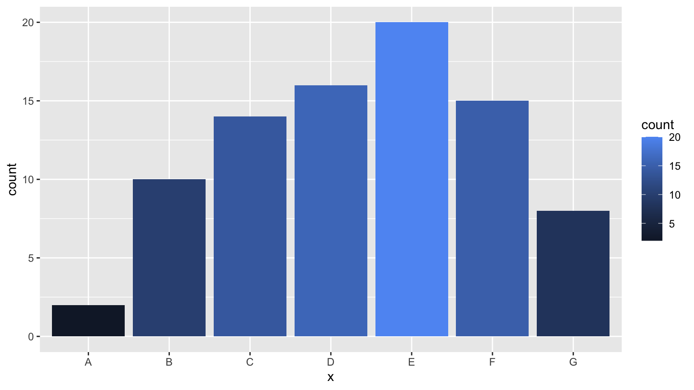
To make a continuous scale out of the RColorBrewer package, we can use a function called colorRampPalette. Then upon coloring, we need to specify scale_fill_manual instead. (Note: need to convert y to factors)
discrete_colors <- brewer.pal(3, 'Greens')
continuous_palette <- colorRampPalette(discrete_colors)
ggplot(df, aes(x=x, y=count)) +
geom_col(aes(fill=as.factor(count))) +
labs(fill ="count") +
scale_fill_manual(values=continuous_palette(7))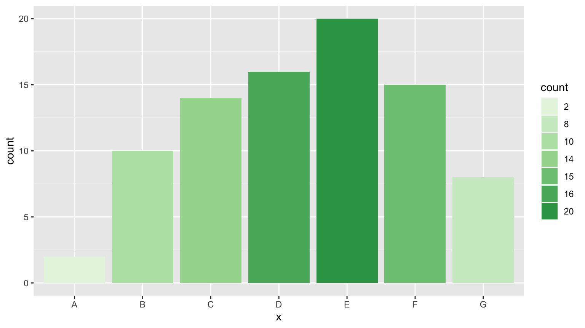
16.3.2 Heatmap
Some colored heatmaps could look more enjoyable and clearer than others. We could still use the scale_fill_gradient for these plots, but we can try scale_fill_continuous as well. There are also packages like colorspace that does similar things. Feel free to explore these options.
ggplot(faithfuld, aes(waiting, eruptions, fill = density)) +
geom_tile() + scale_fill_continuous(type='viridis')
# using the colorspace package
ggplot(faithfuld, aes(waiting, eruptions, fill = density)) +
geom_tile() + scale_fill_continuous_sequential(palette = "Blues")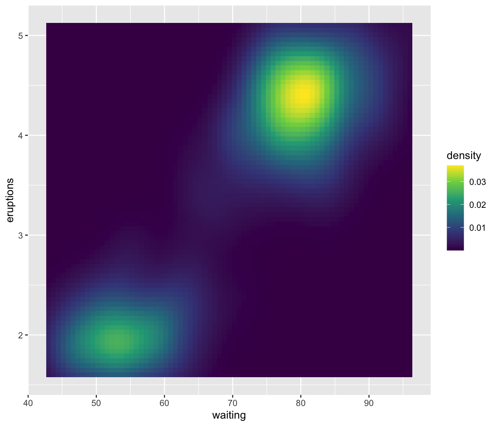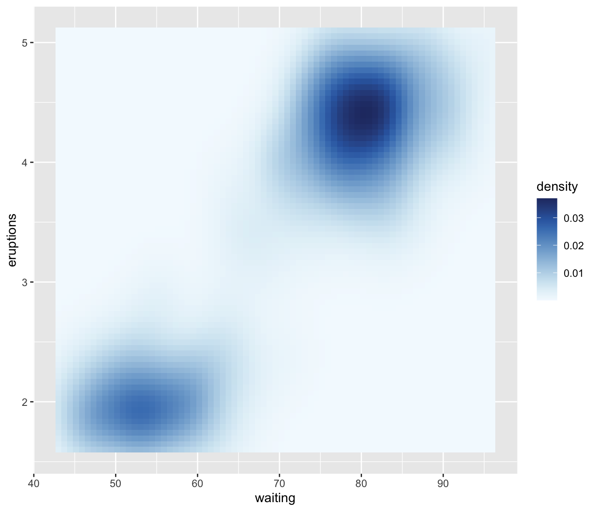
Here is another one.
library(reshape2)
# normalize the data
normalized_mtcars <- as.data.frame(apply(mtcars[, 3:7], 2, function(x) (x - min(x))/(max(x)-min(x))))
# melt the dataframe
melt_mtcars <- melt(normalized_mtcars)
melt_mtcars$car <- rep(row.names(mtcars), 5)
# plot
ggplot(melt_mtcars, aes(variable, car)) +
geom_tile(aes(fill = value), colour = "#f1beb6", width = 1, size=0.5, height=1) +
scale_fill_gradient(low = "white", high = "red")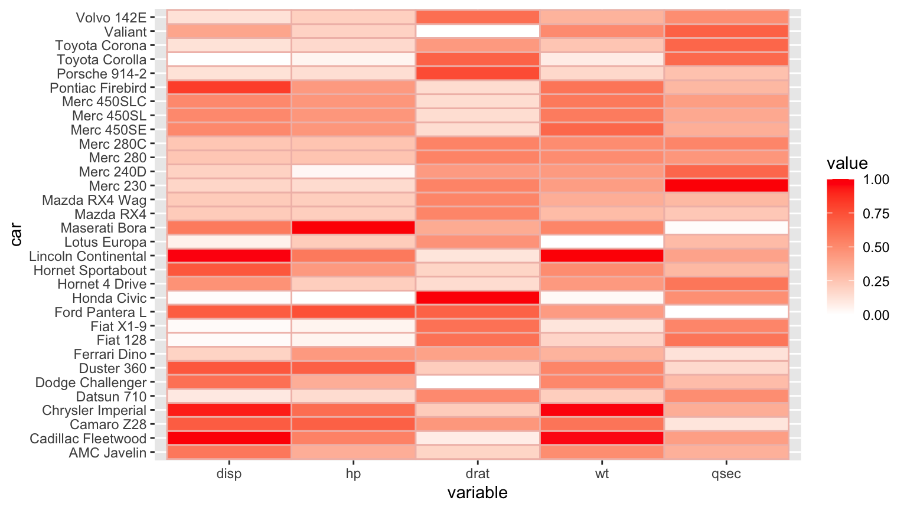
16.3.3 Diverging Scales
A diverging color scale creates a gradient between three different colors, allowing you to easily identify low, middle, and high values within your data. Here is an example with ggplot2.
# generate some data
df1 <- data.frame(
x = runif(100)-0.5, # 100 uniformly distributed random values
y = runif(100), # 100 uniformly distributed random values
z1 = rnorm(100)-0.5 # 100 normally distributed random values
)
df2 <- data.frame(
x = runif(100)+0.5, # 100 uniformly distributed random values
y = runif(100), # 100 uniformly distributed random values
z1 = rnorm(100)+0.5 # 100 normally distributed random values
)
df <- rbind(df1, df2)
# plot
ggplot(df, aes(x, y)) +
geom_point(aes(colour = z1), size=3) +
scale_color_gradient2(low = 'blue', mid = 'white', high = 'red')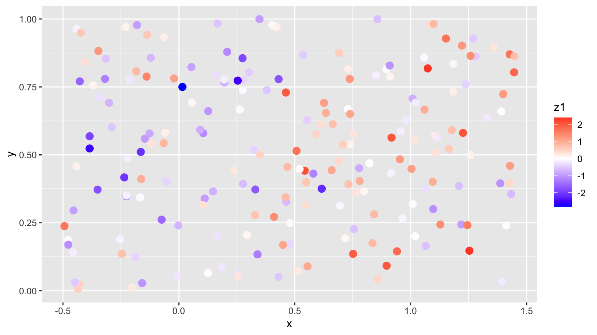
16.3.4 ColorBlind
In class we talked about the ggthemes::scale_color_colorblind method. Here are some other approaches. The RColorBrewer package we used before has a selection of colorblindFriendly choices.
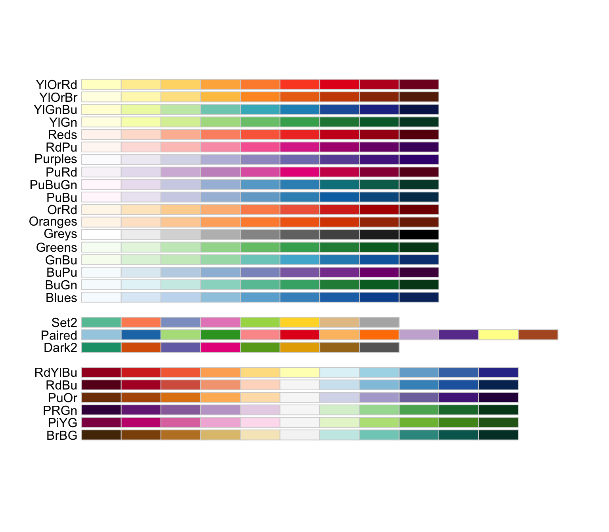
The dichromat package provides color schemes to suit the needs of color blind users. This is how the color palettes look like:
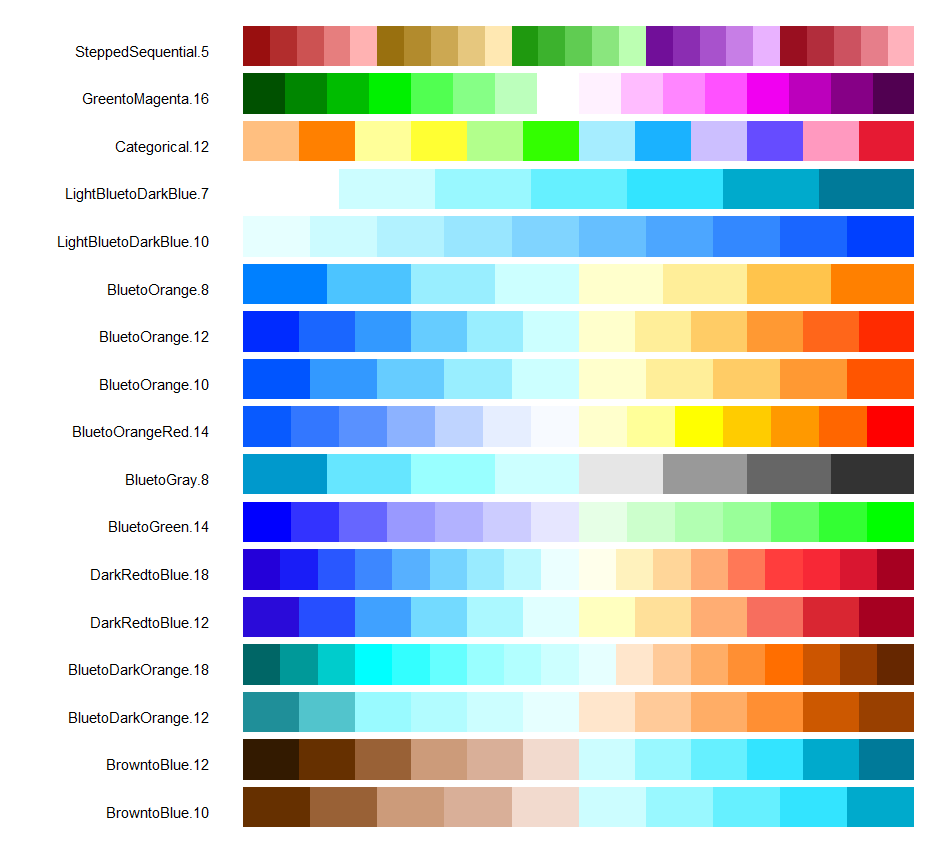
Here is how you can extract the colors from the package:
## [1] "#331A00" "#663000" "#996136" "#CC9B7A" "#D9AF98" "#F2DACE" "#CCFDFF"
## [8] "#99F8FF" "#66F0FF" "#33E4FF" "#00AACC" "#007A99"16.4 Resources
- Color Picker Website, “https://imagecolorpicker.com/”
- viridis package introduction
- R Documentation of the RColorBrewer package.
- The colorspace package on CRAN.
- Color Tutorial from stat545.com
- “Top R Color Palettes to Know For Great Data Visualization” from datanovia.com.